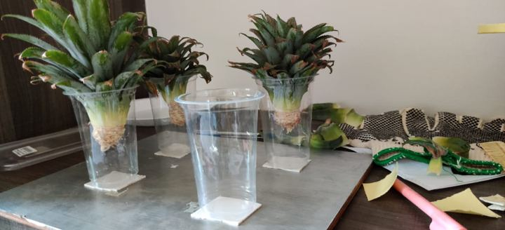
Original · 1280×583
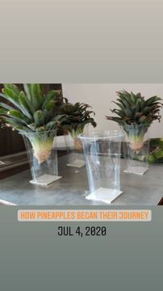
Pineapple tops in glasses of water
- Source
- Original (WhatsApp)
- Site shows
- Original for 020
- On site
- Yes: now the file behind soil-020-2020-12-05
Garden · originals audit
125 unique photos and 3 videos sent over WhatsApp on 16–17 December 2021, sorted by chapter and plant and matched against the Instagram story frames the garden page was rebuilt from. An original replaced a story frame only when it was larger, at least as sharp, and free of story stickers or text. Green-edged cards are now on the site.
Of the 83 Instagram-only ids, 66 have no original at all and 17 have one that was not better. Ratings: 63 great, 46 usable, 16 skip. Relations: 36 exact, 52 same scene, 37 new (photos only). No videos were replaced or added.
2 originals


Pineapple tops in glasses of water
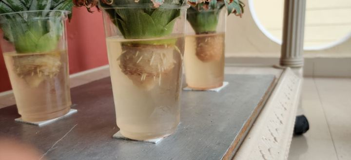
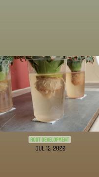
Roots developing in the glasses
19 originals
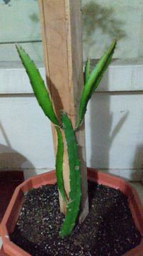
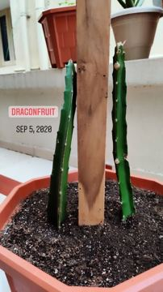
Dragon fruit cutting against the pole, close
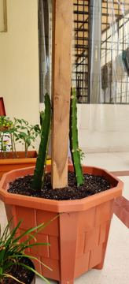
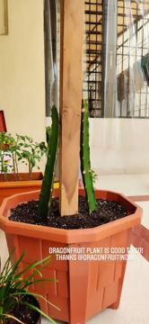
Dragon fruit cuttings tied to the pole
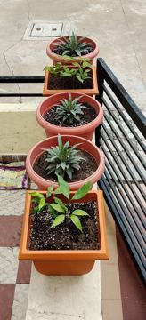
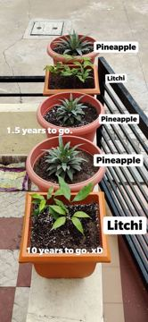
Pineapples and litchi lined up on the ledge
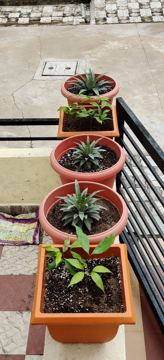
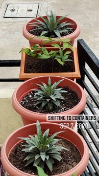
Near-identical to O30
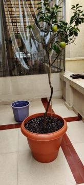
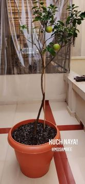
Mosambee, the same morning, wider
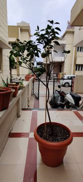
Mosambee tree from the gate side
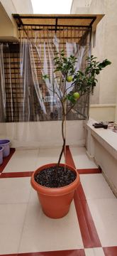
Mosambee with its first fruit (smaller than the story)
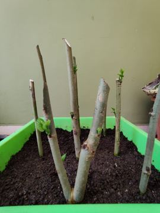
Mulberry cuttings pushed into a green trough: the first cutting experiment
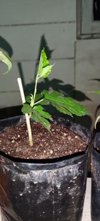
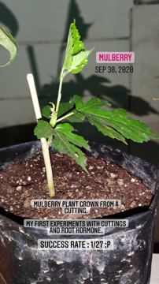
The mulberry cutting that took, in a grow bag
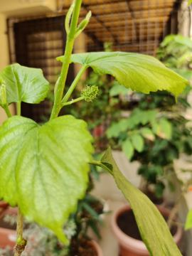
Mulberry shoot with a fruit bud forming
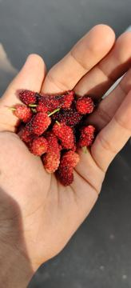
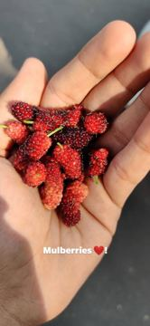
Mulberries in hand
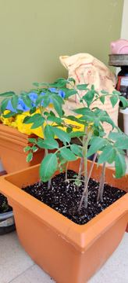
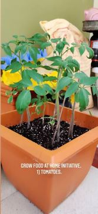
Tomato seedlings in the square pot (also the photo behind soil-009)
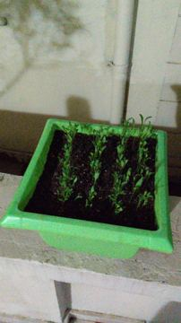
Spinach sown in rows in a green tray
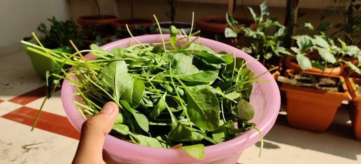
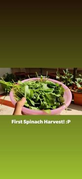
First spinach harvest in the pink tub
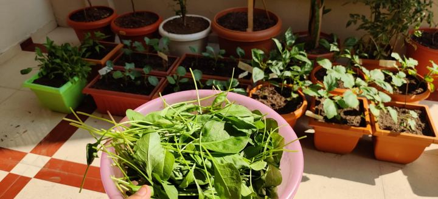
Spinach harvest with the seedling troughs behind
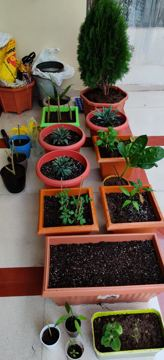
The ledge row: pineapples, seedlings, a thuja
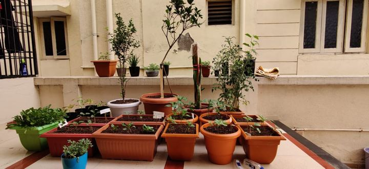
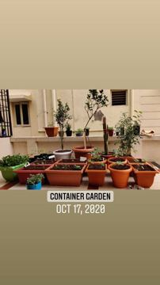
Container garden, 17 Oct 2020
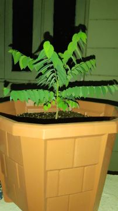
A pinnate-leaved fruit sapling in an octagonal pot, at night
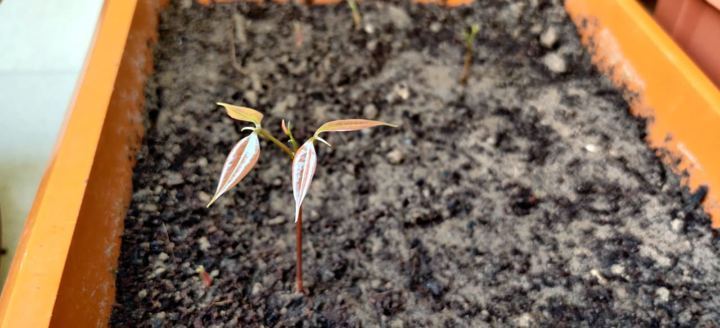
A seedling with two seed leaves in an orange trough
30 originals
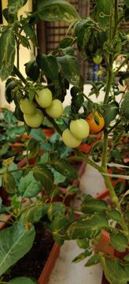
Tomato plant heavy with green fruit
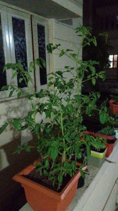
Tomato plant at night
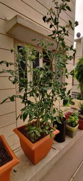
Tall tomato plant by the window
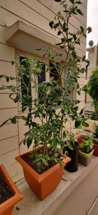
Burst twin of O68
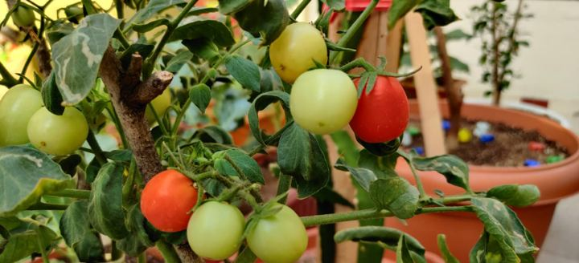
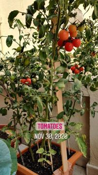
Burst twin of O3
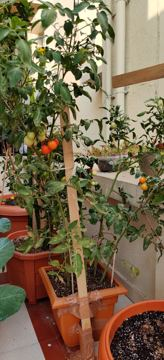
Tomato plant from the side, ripe fruit low down
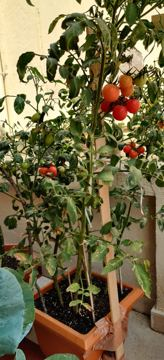
Burst frame of O83
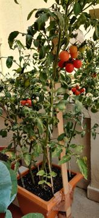
Burst frame of O83
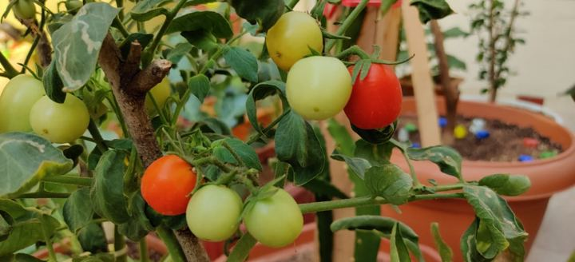
Tomatoes ripening on the vine, close-up
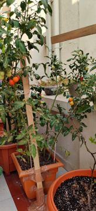
Tomato plant and the lemon behind it
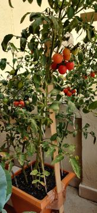
Tomato plant with ripe fruit at the top
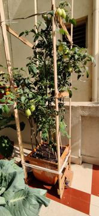
Burst twin of O90
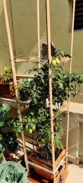
Tomato on a bamboo trellis
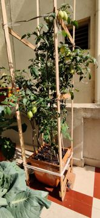
Burst twin of O90
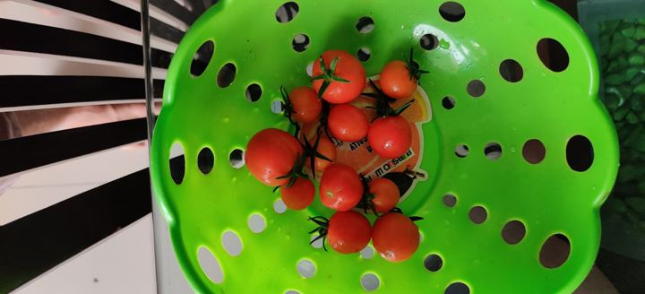
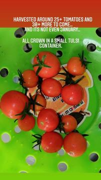
25+ tomatoes in the green colander
Cauliflower plants in the trough, from above
Broccoli in the trough, from above
Cabbage in the trough, from above
Cabbage with petunias behind
A small broccoli head forming
Cauliflower from above, curd just showing
A bunch of spinach in hand
Capsicum seedlings ready for containers
Chrysanthemums on the balcony
A white-and-magenta petunia
Petunia and poinsettia
Torenia from above
Container gardening, 23 Nov 2020
The courtyard floor in December 2020: cabbages, broccoli, poinsettia
Courtyard in December 2020: cabbages, fruit trees, blue sky
28 originals
Mosambee in flower, white blossom along the branches
Broccoli head with side shoots
Broccoli head on the plant
A cabbage head
The first cauliflower from above (the video's subject)
Near-identical to O73
The first cauliflower, closer
The first cauliflower, close (same clip as the story, 352x640, no caption)
Three violet cabbages in a row, from above
Morning harvest laid out: lettuce, cauliflower, brinjal, tomatoes
Harvest on leaves beside the lettuce
Cauliflower and green brinjals, close
Morning routine: cauliflower, brinjals, tomatoes on leaves
Near-identical to O91
Harvesting cauliflower (24 s, longer take of the story moment, 352x640)
Cauliflower bolting on the plant
A wild cauliflower
Wild cauliflower, broccoli and tomatoes on a plate
Wild cauliflower held over the pots
A lettuce leaf in hand
Smaller twin of O81
Yellow capsicum, still green
A small yellow capsicum in hand
Yellow capsicum on the plant
Coloured capsicums on white
Green brinjal hanging in the foliage (soft focus)
Just some baingan
A green brinjal, close
41 originals
Dragon fruit over the pole, wide, from the stairs
Dragon fruit arching over the pole, full height
Flower bud on the pole (a panel of the collage)
A long bud tied to the pole
Dragon fruit bud on the ledge
Bud rising from a stem on the ledge
Near-identical to O43
The bud close-up, opening at the tip
Near-identical to O59
Night bloom on the ledge, side on
Night shoot: the flower open, tripod and light set up
The morning after: a spent dragon fruit flower folding down
A pineapple plant from above
The Barbados cherry tree, first fruit
Two Barbados cherries, close
Picking a Barbados cherry
Cherries on the tree
Barbados cherry tree with the blood lily
Barbados cherries and their seeds, two bowls
Barbados cherries in a bowl
Rambutan with its name tag
Bhindi flower
Texas sage in flower
Red hibiscus in the sun (a second hibiscus, not in the plant list)
Near-identical to O51
Orange hibiscus, flowers like roses
Blood lily in full bloom (a panel of the collage)
Near-identical to O8
Rain lily with its name tag
Rain lily against the door, no name tag
Rajnigandha spikes opening
Curcuma and rajnigandha with their name tags
Rajnigandha flowers, close
Near-identical to O48
Near-identical to O70
Orange cosmos from above
Cosmos and mustard along the wall
The courtyard from upstairs: pineapples, dragon fruit, scooter
Zinnia with its name tag
Morning glory with a hand-lettered name tag
Red roses in a square pot, at night
8 originals
A ripe dragon fruit in hand (a panel of the collage)
Dragon fruit cut open
Dragon fruit ripening on the plant
White chrysanthemums in a square pot (Dec 2020 or Dec 2021)
Chrysanthemum back with a blast, kalanchoe behind
White dahlia against the sky
Dahlia on a tall stem against the sky
A two-minute walk round the garden in December 2021 (352x640)
Every story frame still on the site. These 66 have no original yet, so they are the ones to go looking for.
soil-004-2020-09-07
2020-09-07
Labelled seed tray, “Ongoing”
soil-005-2020-09-07
2020-09-07
First leaves in the seed tray
soil-008-2020-12-05
2020-12-05
Torenia (“Gardening stories”)
soil-012-2020-12-05
2020-12-05
Seedling troughs: cabbage, broccoli, cauliflower
soil-014-2020-12-05
2020-12-05
Cabbage leaves folding in, close
soil-016-2020-12-05
2020-12-05
Broccoli stalk
soil-017-2020-12-05
2020-12-05
Cauliflower in the trough, Nov 23 2020
soil-018-2020-12-05
2020-12-05
Palak paneer from the last spinach
soil-019-2020-12-05
2020-12-05
Spinach sown again for winter
soil-022-2020-12-05
2020-12-05
Pineapples shifted to containers
soil-023-2020-12-05
2020-12-05
Pineapples getting bigger
soil-024-2020-12-05
2020-12-05
Dragon fruit cuttings, Sep 5 2020
soil-025-2020-12-05
2020-12-05
Dragon fruit climbing the pole
soil-026-2020-12-05
2020-12-05
Violet cabbage seedling
soil-028-2020-12-05
2020-12-05
Mulberry, second-fastest grower
soil-029-2020-12-05
2020-12-05
Eggplant (brinjal) plant in flower
soil-030-2020-12-05
2020-12-05
Texas sage
soil-036-2021-01-04
2021-01-04
Second tomato harvest in a line
soil-038-2021-01-09
2021-01-09
Himalayan cherry seedling in a cup
soil-039-2021-01-09
2021-01-09
Himalayan cherry seedlings from the fridge
soil-040-2021-01-09
2021-01-09
Upcoming summer plants (video)
videosoil-042-2021-01-18
2021-01-18
Lettuce in a yellow colander
soil-043-2021-01-18
2021-01-18
Cauliflower, capsicum, brinjal, tomatoes
soil-044-2021-01-18
2021-01-18
Harvesting cauliflower (video)
videosoil-047-2021-01-24
2021-01-24
Winter harvest: cauliflower and tomatoes
soil-048-2021-01-24
2021-01-24
Me and the cauliflower
soil-049-2021-02-06
2021-02-06
Bhindi seedlings (“Ek patta, do bhindi”)
soil-052-2021-02-20
2021-02-20
Capsicums finally going yellow (video)
videosoil-053-2021-03-04
2021-03-04
Yellow capsicum ready (video)
videosoil-054-2021-03-04
2021-03-04
Violet cabbage
soil-057-2021-08-13
2021-08-13
Barbados cherry, close
soil-058-2021-08-13
2021-08-13
Another cherry
soil-059-2021-08-13
2021-08-13
Others getting ready
soil-062-2021-08-13
2021-08-13
Rajnigandha and curcuma
soil-063-2021-08-13
2021-08-13
Cosmos along the wall
soil-064-2021-08-13
2021-08-13
Texas sage with the hibiscus
soil-065-2021-08-13
2021-08-13
Collage: hibiscus, lantana, blood lily
soil-066-2021-08-13
2021-08-13
The fruit section
soil-067-2021-08-13
2021-08-13
Dragon fruit over the top of the pole
soil-068-2021-08-13
2021-08-13
Pineapple, a year in
soil-069-2021-08-23
2021-08-23
Dragon fruit buds (collage)
soil-070-2021-09-01
2021-09-01
Dragon fruit flower buds (collage)
soil-071-2021-09-01
2021-09-01
A fruiting branch, “… season is here”
soil-074-2021-09-07
2021-09-07
Dragon fruit flower opening (“It’s happening”)
soil-075-2021-09-07
2021-09-07
Dragon fruit in full bloom
soil-076-2021-09-20
2021-09-20
Barbados cherry season (collage)
soil-078-2021-11-23
2021-11-23
More green than tile
soil-079-2021-11-23
2021-11-23
Snake gourd flower (“Random plant be like”)
soil-080-2021-11-23
2021-11-23
Sweetest dragon fruit (collage)
soil-082-2021-11-23
2021-11-23
Dahlias (collage)
soil-083-2021-11-23
2021-11-23
Dragon fruit flowers, second round
soil-084-2021-11-23
2021-11-23
Dragon fruit night bloom
soil-086-2021-12-08
2021-12-08
Winter blooms: kalanchoe
soil-087-2021-12-30
2021-12-30
Mulberries again
soil-088-2022-01-13
2022-01-13
Mulberries on every branch (video)
videosoil-089-2022-01-18
2022-01-18
Pineapple flower, a surprise (video)
videosoil-090-2022-01-18
2022-01-18
Pineapple flowering over 15 days (collage)
soil-091-2022-01-23
2022-01-23
Red chillies in hand
soil-092-2022-01-23
2022-01-23
Chillies on the plant
soil-093-2022-01-23
2022-01-23
Cauliflower, second winter
soil-094-2022-02-03
2022-02-03
Pineapple fruit forming (video)
videosoil-095-2022-02-03
2022-02-03
Pineapple fruit growing
soil-096-2022-02-03
2022-02-03
Orange flower buds (video)
videosoil-097-2022-04-14
2022-04-14
Pineapple harvest (video)
videosoil-098-2022-04-14
2022-04-14
Pineapple harvest, one more (video)
videosoil-099-2022-04-14
2022-04-14
Pineapple harvest, “Another one” (video)
videoA higher-resolution export of these (straight from the phone, not via WhatsApp) would be worth having.
soil-000-2020-09-07
2020-09-07
Dragon fruit cuttings at the pole
Original received, kept the story: same resolution (583 vs 590 px wide), not sharper
soil-001-2020-09-07
2020-09-07
Pineapple and litchi pots on the ledge, labelled
Original received, kept the story: same resolution, not sharper
soil-002-2020-09-07
2020-09-07
Mosambee with its first fruit (“Kuch naya!”)
Original received, kept the story: original is smaller (528×1152); the story is a closer crop
soil-003-2020-09-07
2020-09-07
Tomato seedlings in a square pot (grow food at home)
Original received, kept the story: same resolution, not sharper
soil-006-2020-10-08
2020-10-08
Mulberries in hand
Original received, kept the story: same resolution, not sharper
soil-009-2020-12-05
2020-12-05
Tomato seedlings, Sep 7 2020 sticker
Original received, kept the story: same resolution, not sharper
soil-010-2020-12-05
2020-12-05
Tomato plant with ripe fruit, Nov 30 2020
Original received, kept the story: same resolution (729 vs 720 px wide)
soil-011-2020-12-05
2020-12-05
25+ tomatoes in a green colander
Original received, kept the story: story holds about 1.4× more detail than the original
soil-013-2020-12-05
2020-12-05
Cabbage, Nov 27 2020
Original received, kept the story: same resolution (729 vs 720 px wide)
soil-015-2020-12-05
2020-12-05
Broccoli in the trough, Nov 23 2020
Original received, kept the story: story holds about 1.4× more detail than the original
soil-027-2020-12-05
2020-12-05
Mulberry grown from a cutting
Original received, kept the story: story is 1.2× larger, same detail
soil-031-2020-12-05
2020-12-05
Capsicum seedlings ready for containers
Original received, kept the story: story is 1.2× larger, same detail
soil-032-2020-12-05
2020-12-05
Petunia and poinsettia
Original received, kept the story: identical size (720×1280)
soil-033-2020-12-05
2020-12-05
Chrysanthemum on the balcony
Original received, kept the story: same resolution (733 vs 720 px wide)
soil-037-2021-01-05
2021-01-05
The first cauliflower (video)
videoOriginal received, kept the story: video original is 352×640, the story is 640×1136
soil-041-2021-01-18
2021-01-18
Morning routine: cauliflower, brinjals, tomatoes
Original received, kept the story: same resolution (729 vs 720 px wide)
soil-072-2021-09-01
2021-09-01
Bhindi flower
Original received, kept the story: story is a tighter crop with about 1.7× more detail